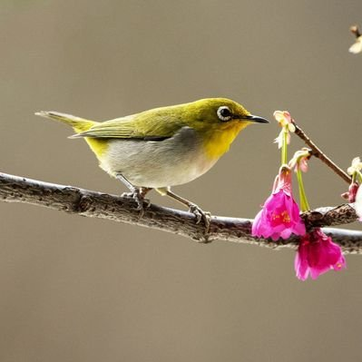

NekoKage📸
@_NekoKage
RT @MSZE15: 関口知宏の中国鉄道大紀行。NHKで2007年放送され、高鉄化直前の中国の鉄道の貴重な映像となったけど、小紅書では河北省邯鄲→山西省長治北の区間に消えゆく緑皮車「22型客車」が登場していた。1994年に製造終了し、番組内でも「次は乗れないかも」と話題に。人…

Mt.SZEBL
@MSZE15
関口知宏の中国鉄道大紀行。NHKで2007年放送され、高鉄化直前の中国の鉄道の貴重な映像となったけど、小紅書では河北省邯鄲→山西省長治北の区間に消えゆく緑皮車「22型客車」が登場していた。1994年に製造終了し、番組内でも「次は乗れないかも」と話題に。人生の移ろいは早く、まさに「邯鄲の夢」🙂 https://t.co/2sJrTt3pDV